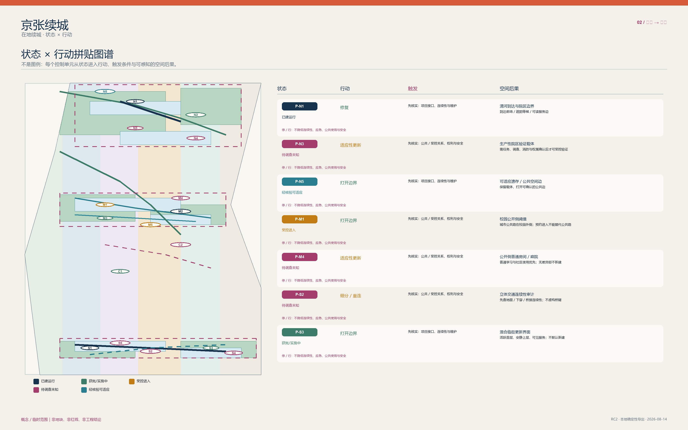
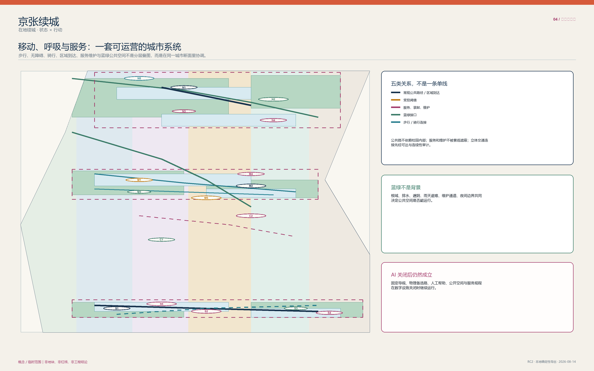

京张续城 / Jing-Zhang In Place
以城市的代际连续为先：守住日常生活，再谨慎安排少量可退出的 AI 任务。
京张续城 / Jing-Zhang In Place


让未来生长，让城市相续。
先看城市，再看技术
技术属于时代，城市属于世代。 京张续城不是用一条“智能走廊”覆盖既有生活，而是在树荫、步行、学习、服务、维护和小微日常已经完整成立的城市里，谨慎判断何时技术真的值得占用一点空间。城市不是技术的容器，而是代际生活的连续体；不是每一次技术进步，都值得城市付出永久的空间代价。
方案把这份连续体写成三种可被看见、也可被维护的关系：
- 续时：长期的街道、绿荫、步行与公共服务不为短周期设备让位；
- 续生：不同年龄、能力、职业和节奏的人，都保有不用 App 也能抵达、停留、询问与离开的路径；
- 续忆：京张铁路的韧性不被复刻成符号，而被转译为一项责任——每一个例外状态都必须能被解释、停止并还给日常。
因此，空间并非同质更新：长久城市承载街道、树木、服务和公共记忆；可适应城市容纳可修补的房间、门槛和运营；暂居智能只在真正需要时，以最小、可撤、有人负责的方式短暂停留。众智园是“验证”而非展示，AI 原点是“共处”而非占用，大钟寺是“裁决”而非自动化。STATUS × ACTION 留在底层作为审慎的判断骨架，而不是城市形象本身。
三条人本阅读路线
| 路线 | 先看什么 | 读完会知道什么 |
|---|---|---|
| 30 秒：一座可相续的城市 | 封面、三种连续、三层时间、三处重点区 | 城市为何先于技术，普通生活如何保持完整 |
| 3 分钟：一个谨慎的空间决定 | FIG.03 重点区、P0 参考、FIG.05 证据图 | 为什么只有一项 S01 被推至 P0，空间如何停下并回到日常 |
| 15 分钟：一条可复核的责任链 | 全文、结构化资料、假设/来源/矩阵 | 哪些内容由参与者提出，哪些仍须专业、权利人和现场确认 |
方法底座：只在城市许可时使用
一句话主张：京张不是等待 AI 填满的空白线，而是一座状态、权限与断面不等的既有城市。方案以
STATUS × ACTION先行界定空间底线，坚持AI_OFF_CITY（在无智能层介入时，普通公共街道、混合生活、无障碍路径与人工服务 100% 完整成立），在 12 项城市任务中严格执行“普通空间充分性检验”，仅对物理验证不足、受控协作不足、合规评审不足的 S01、S04、S07 三项准入为深度空间包，其余 9 项均为 NO-BUILD 或普通载体，且所有准入空间均具备严格的 TTL、人工绝对权威与一键物理复位机制。空间数据
---
任务书六项交付：从索引到城市叙事
这不是附在方案末尾的合规清单。六项任务均被放进同一条可读、可退、可复核的城市叙事：先让普通城市工作，再决定是否需要 AI；先分清事实、规则与未知，再谈最小空间差异。下图给出 6 项任务、12 张场景卡、3 个深度验证、6 类人物、5 个案例与 3 处地标的阅读入口。空间数据

任务一：一带总体概念与功能统筹
京张续城 / Jing-Zhang In Place 是主名称；Logo 方向是两条原创的“铁路缝线 + 可开启复位门”，不使用第三方商标，且与逐点导视严格分开。三大定位是“百年京张文化带、都市 AI 生活体验带、AI 融合创新带”；五大功能是“AI 全栈自主创新体系、世界级 AI 创新生态、AI+ 场景赋能新范式、智能化 AI 活力城市、AI 治理全球话语权”。来源
三区两翼不是五个开发项目：众智园对应受控物理验证，AI 原点对应公开侧的可撤协作，大钟寺对应有人工的采用/合规界面；中关村科技服务翼只提出专业服务转介，小月河场景赋能翼只提出可申诉的维护与公共体验反馈。五者以“问题进入—普通空间充分性—深度准入或 NO-BUILD—公共反馈—复位”的回路协同。总体结构是既有城市的多点缝合而非单一形象轴。空间数据
条件区域协同：任务—接口—证据—反馈
五个区域关系不再停留在研究清单，而是统一进入“候选任务 → 建议接口 → 证据请求/交换 → 反馈回京张 → 激活条件”的条件回路。任何节点缺少授权联系人、合法/清权证据、人工责任或退出条件时，回路不激活，京张保持普通城市或 NO-BUILD；这是一套原创的任务接口设计，不是合作事实。空间数据
共同现状与边界（逐行适用）：UNCONTACTED / UNCONFIRMED；NO PARTNERSHIP CLAIM；NO RESOURCE COMMITMENT；NO OPERATOR COMMITMENT；NO GOVERNMENT COMMITMENT。
| 关系节点 | 候选任务 | 建议接口 | 请求/交换证据 | 返回京张 | 激活条件 | 当前状态与不承诺边界 |
|---|---|---|---|---|---|---|
| 北纬社区 | S06 / S11：日常服务与宁静边界 | 普通城市问题单 + 人工交接桌 | 居民定义的问题、无障碍与非数字兜底、同意和参与代表性 | 公共利益底线；普通空间充分或 NO-BUILD 判定 | 经授权社区联系人、可申诉参与规则、非采集基线均确认 | UNCONTACTED / UNCONFIRMED；上述四项不承诺边界逐项适用 |
| 未来科学城 | S04：多模态协作交接 | 可撤会话证据包接口 | 有界任务、数据权利、进入条件、人工管理人与复位要求 | 准入矩阵；可复用交接格式；不满足项清单 | 经授权对口方、有界任务、合法/清权数据和人工管理人均到位 | UNCONTACTED / UNCONFIRMED；上述四项不承诺边界逐项适用 |
| 怀柔科学城 | S01：真实物理任务验证 | 物理任务—安全—复位问题包，不转移设备 | 任务包络、场地/进入许可、运营与安全责任、失败和复位计划 | 最小可撤差异，或普通载体 / NO-BUILD 结论 | 真实任务、经授权载体、运营/安全责任人和受监督排演均确认 | UNCONTACTED / UNCONFIRMED；上述四项不承诺边界逐项适用 |
| 经开区 | S07：采用与合规复核 | 有人值守的复核/申诉协议交接 | 受影响使用者、复核标准、纸质兜底、争议和停止路径 | 采用证据板；停止/复位规则；缺失权利清单 | 经授权用例、人工复核/申诉路径和非数字服务均成立 | UNCONTACTED / UNCONFIRMED；上述四项不承诺边界逐项适用 |
| 京津冀 | S12：证据状态与版本变更 | 跨域证据信封 + 适用性差异表 | 来源、版本、适用辖域、合法交换依据、人工权威与回滚条件 | 本地适用 / 不兼容 / 缺证项清单，回写 STATUS × ACTION | 公开或清权任务书、经授权交换路径及各地人工权威均确认 | UNCONTACTED / UNCONFIRMED；上述四项不承诺边界逐项适用 |
综合规划创新不是替代国土空间规划：STATUS × ACTION 先判断既有载体可做什么，AI Spatial Admission 再判断该动作是否配得上最小、可撤的专业空间差异；缺少事实、权利或公共利益条件即回到普通空间或 NO-BUILD。空间数据
任务二：生态系统不是招商承诺
生态图谱由“任务需求—普通载体—人类复核—证据/权利门—可撤交付—公共解释/复位”组成；土地/空间、产业、资金、人才、算力、数据与场景均只以门槛和机制表达。众智园是 S01 的条件性验证类型，AI 原点是 S04 的条件性公开侧协作类型，科技服务翼是 S07 之前的专业服务转介类型；它们不构成已获得的载体、算力、数据、企业名单或资金。空间数据
| 全球案例 | 观察到的机制 | 不可移植内容 | 京张可概念性检验 |
|---|---|---|---|
| Seoul AI Hub | 人才—企业—社区的运营生态 | 不推断本地合作、场地或计划 | 学习、验证与公共说明之间的人工转介 |
| Vector Institute | 有责任的研究到产业转译 | 不推断机构、人才或资金 | S07 的证据、申诉与人工交接 |
| Mila | 开放科学与社区交流边界 | 不推断附属关系或活动 | S05 的有主持模型素养说明 |
| Singapore PlatformAI | 共享服务的边界与版本治理 | 不推断本地算力、数据或服务 | S12 的来源/版本先于开放 |
| Digital Catapult | 测试—示范—采用的阶段路径 | 不推断采购、运营或效果 | S01/S04/S07 可独立停止的概念测试 |
五例均为公开方法背景，不能支持京张的投资、企业、运营、审批或实施事实。来源 来源
任务三：十二张场景卡、六类人物与小月河体验路径
12 张卡严格对应 12 项既有任务，绝不另造“智慧城市”清单。S01/S04/S07 是三项深度验证；其余九项明确给出普通空间充分或 NO-BUILD。六类人物不是营销角色：他们检验日常商业、学习、开发、无障碍、文化访问与维护安全能否在 AI 关闭时继续成立。小月河体验路径是“雨后人工巡查—可申诉维护反馈—无数据采集的实体解释—回到普通绿廊”，进入、生态与运维条件未确认即暂停。空间数据

完整卡片、三项验证指标和人物—场景映射见“任务三：十二张场景卡”；机器可读的同一原始资料保留全部字段，便于专业团队复核而不取代正文阅读。空间数据
任务四：公共空间与三处可撤朝圣地标
京张遗址公园的 AI 公共空间响应是可读、可维护、AI 关闭后仍完整的遗产公园序列：实体解释、雨天停留、人工维护反馈和无障碍替代。东西向优先地面步行缝合，南北向先审计站城—地面—公共空间连续性；不把桥、隧道、地下空间或交通工程说成可行。大钟寺的智能原生消费/商务场景是 S07 的有人工证据和申诉界面，保护日常服务、可达与小微经营连续性，不预设租户、客流、产权或改造。空间数据
三处地标均是运营上 AI-native、物理上最小的可撤构件：复位门 / Reset Frame 在众智园提示 S01 的状态与复位；交接台 / Handover Table 在 AI 原点让人看见同意、说明与退出；申诉台 / Right-to-Appeal Desk 在大钟寺保留人的咨询、纸质替代和争议入口。可撤证据荣誉轨只展示经同意的公共贡献、方法、来源、复核日期与到期/复位状态，禁止生物特征排名、未经证实成就与永久明星化。组件库包括 STATUS 砖、AI-OFF 标记、无障碍实体导向、同意/申诉卡、可撤边界杆与签名复位票。空间数据
任务五：文化不是 AI 装饰
本方案的文化转译是参与者撰写的概念类比，不是对铁路精确工程、运营制度或当前空间条件的事实主张：变向线形被转译为“以准入换韧性”，道口被转译为“先保证地面连续”，交接被转译为“停止、签收、退出与复位”。中关村创新文化与 AI 新文化因此不是炫技图像，而是可测试、可争议、可退回普通城市的公共过程。导视使用“地点 + STATUS + 允许 ACTION + 人工帮助 + 停止/复位”的双语规则；它与总体 Logo 分工，前者回答当下怎么走、能做什么，后者表达整条带的身份。国际传播语为：“一座赢得每一次例外状态、也能把它还给日常的城市。”空间数据
任务六：可停止的年度运营循环
年度活动不是已定日程：概念顺序为公开问题与现场/证据核验、开发者在普通载体或 NO-BUILD 中排演、S01/S04/S07 在满足准入后才进行受监督会话、公共证据周与独立复核、归档/到期和完全复位。活动识别可用“证据周、复位票、普通城市开放室”；开发者社区把任务提交到公共利益和充分性检验，未通过者保留普通空间结果。地标与荣誉展示在证据、同意或管理人到期时撤除。资金仅列公共利益更新、研究/测试合作、运营者贡献、公益文化支持和适当商业收入等机制选项，没有承诺资金、金额或采购。空间数据
主张限定：把暂停画在看得见的位置
| 可能被误读的主张 | 本方案的可见分类 | 现在能说什么 | 触发后才可更新 |
|---|---|---|---|
| 范围、面积与比例 | GEOMETRY_DERIVED_PROVISIONAL | 投稿几何可复算的概念一致性值 | 官方 SITE_BOUNDARY/KEY_AREA 到位后整体复算 |
| 法定主体、运营者与停止权 | UNKNOWN / DESIGN_RULE | 法定/来源支持的事实与建议角色类型分开 | 权利人、运营方和专业/法定责任确认 |
| 资金与分期 | CONCEPT_PROPOSAL | 条件性机制选项与证据门 | 授权预算路径与协议 |
| 校园、站区、企业及遗产空间进入 | PAUSE_UNTIL_OFFICIAL_DATA | 普通城市路径和概念类型 | 当前调查与所有者/运营方书面同意 |
| 工程、容量、试点和现场表现 | CONCEPT_PROPOSAL | 离线概念与复位演练 | 专业调查、容量/安全审查、授权与受监督排演 |
三项 formal 视觉指标仍由投稿者提供的临时几何计算，保留来源、公式和官方数据到位后的复算触发；它们绝不是法定红线、测量成果或工程量。指标 指标 指标
---
文化转译与空间类比：线形、道口与交接
以下三项是参与者的文化转译，不是关于铁路精确历史工程、运营制度或当前空间条件的事实主张： 1. 变向线形（概念类比）：一条会变向的铁路线形被转译为“以准入换韧性”——当技术不确定性仍在时，不盲目追求全线铺设 AI 设施，而以空间分级与可逆准入回应。 2. 道口缝合（概念类比）：道口被转译为“先保证地面连续”。因此，方案把连续地面步行与独立无障碍流线放在任何技术装置之前。 3. 交接责任（概念规则）：交接被转译为“停止、签收、退出与复位”。方案建立“S0 普通城市 → S1 准入专业状态 → S2 退出复位”的交接链，使每一处建议的技术例外都有未来可追责的交接与退出记录。
---
设计依据与资料清单
任务边界以公告、任务书、允许设计空间、标准与来源登记为主控输入。所有定位性事实均被限制在来源支持的时空尺度；国际案例只提供方法启发，不支持京张的项目、合作或空间事实。来源 来源 来源 临时总体边界和三处重点区只服务概念、拓扑与表达，不能解释为红线、地块、权属或审批范围。来源 深度

如何读此图（FIG.01 京张空间判断 + 条件区域接口）： 1. 只在技术有效处读比例：11.4 km² 总体层和三处重点区来自投稿坐标几何，图上给出北向、0–1 km 比例尺、制图 CRS
EPSG:4548与 2026-08-30 数据状态；43.6 km² 统筹层只有来源支持的关系尺度，没有可用坐标，因此不画成可量测范围； 2. 先读临时警示：总体边界和三处重点区均为GEOMETRY_DERIVED_PROVISIONAL，不是官方红线、地块、权属、审批或测量成果； 3. 比较三处空间判断：众智园处理“水岸—受控载体—区域到达”，AI 原点处理“校园公开侧—普通学习—逐次授权”，大钟寺处理“站城地面连续—骑行/装卸—日常商业”；这些断面均标为NTS / NOT TO SCALE / CONCEPT TYPOLOGY； 4. 沿五行接口回到京张：北纬社区、未来科学城、怀柔科学城、经开区、京津冀只通过候选任务和证据门返回 STATUS × ACTION；未满足激活条件即不产生空间、资源或运营动作； 5. 按六类证据状态复核：图面仅使用SOURCE_BACKED、GEOMETRY_DERIVED_PROVISIONAL、DESIGN_RULE、DESIGN_ASSUMPTION、INDICATIVE、UNKNOWN，不以视觉精度替代现场或法定证据。
---
三层范围工作框架
43.6 平方公里回答产业—人才—公共服务的协同问题；11.4 平方公里用状态、行动、连接和公共空间组织城市设计；三处重点区分别承担不同断面与运营问题。三层并非同一轴线的缩放，而是由证据颗粒度、责任关系和可行动作决定。来源 指标 指标 该范围框架以可追溯层级检验。深度 官方图形到位后，所有几何、指标、图件和行动界面必须一起复算。为避免尺度误读，统筹层仅陈述资产/接口关系，总体层仅陈述临时拓扑，重点层仅陈述类型学断面；三层之间的任何量化迁移均须回到官方边界和现场调查。
---
统筹研究范围产业与未来城市研究
统筹范围识别研究/教育受控边界、现有创新载体、企业—专业服务接口、区域门户、河园遗产和日常社区六类资产。它们通过公共侧房间、经核验的既有载体、普通混合街区与维护可达性形成多入口生态，而非假定企业迁移、园区合并或校园开放。来源 来源 深度 参照 Seoul AI Hub、Vector、Mila、Singapore PlatformAI 与 Digital Catapult 的制度/测试方法，提取的是“责任、服务、验证与退出”机制，而不是复制建筑。来源 来源
---
总体设计范围城市更新与控规深度城市设计
总体结构为 STATUS × ACTION：已建运行、获批/实施中、受控进入、待调查未知、经核验可适应五种状态，分别进入保留、修复、开放边缘、细分/重连和适应性改造/填补。每个 patch 记录来源、限制、用户、触发、断面、交通、服务、蓝绿、责任、停止和退出；替换不在默认行动表。空间数据 指标 深度 强度和高度使用街道围合、首层通透、阈值深度与服务边规则，数值控制仍待官方确认。标准 深度 深度
AI 空间准入不是第二条城市骨架：它只是已经允许的行动内部的一次任务判断。普通路径、普通房间、维护和人工服务先成立；若普通空间充分、证据或权利不够、或没有合格的人工责任，结果就是普通载体、可撤普通工具或 NO BUILD，而非为 AI 预留建设。空间数据

如何读此图（FIG.02 用地、行动与城市织补结构）： 1. 看 5×5 状态行动映射：确认 17 个 Patch 的现状状态与受限行动分配，拒绝无差别大拆大建； 2. 看公共底线：绿色开敞与混合服务界面完整连续，不因技术实验阻断日常公共通行； 3. 核验拓扑无缝：概念用地完整剖分，无重叠、无空隙，面积由 GeoJSON 在 EPSG:4548 严格复算。
| 状态 | 行动判断 | 不可越过的边界 |
|---|---|---|
| 已建运行 | 保留或修复已证缺陷 | 不把开放状态外推到相邻载体 |
| 获批/实施中 | 先协调接口、再补缺 | 不把实施进度写成全线开放 |
| 受控进入 | 公共侧优先、预约/项目访问分开 | 不依赖校园内部形成公共路 |
| 待调查未知 | 只调查、可逆测试或 NO BUILD | 不诊断产权、建筑状况和工程能力 |
| 经核验可适应 | 在专业/权利门通过后改造 | 不把原型当作既有建筑结论 |
---
重点区域详细设计
众智园以水—受控院区边—区域到达的关系作为概念问题：真实物理验证只可能发生在未来经调查、经同意的载体内，公共河园、服务复位和受控测试必须分开。AI 原点以校园公开侧阈值为概念问题：公共城市路不以校园内部为当然通道，普通学习/社区使用优先，临时受控状态须逐次授权。大钟寺以站城地面连续、骑行、装卸和日常商业为待调查问题：临时矩形不是站口、地块或产权方案。三处共同构成详细城市设计的概念响应，而不共享一种院落、门厅或 AI 房间模板。来源 来源 来源
详细设计的类型学边界见下一专业深化层，不共享一种院落、门厅或 AI 房间模板。深度
大钟寺立体站城四象限概念设计组织与空间衔接（Four-Quadrant Design Organization）
临时几何与上下文站城关系存在偏移，因此四象限只是等待数据的概念设计组织，不能锚定为站口、保护边界、过街设施或法定空间：
- 东北问题场：文化/生态界面是否能在不伤害遗产、根域、排水、安静与维护的前提下提供低干扰公共解释？未调查前保持普通公共空间。
- 西北问题场：高校边、道路和公共步行的连续性由谁负责、何时开放、是否无障碍？缺少通行与运营确认即不新增连接。
- 西南问题场：公交、骑行、装卸、夜间安静与日常小微商业是否冲突？先做时间化观察与使用者协作，不重画道路或商业单元。
- 东南问题场：站城、绿廊和公共服务是否存在可读的地面连续？先采用实体导向与人工帮助；桥、下穿、换乘或服务设施均为
CONCEPTUAL_INTERFACE，须PROFESSIONAL_DEEPENING_REQUIRED。
三处界面均为 S0 普通城市 → S1 准入专业状态 → S2 退出/复位 的无尺度类型学，不主张地块、尺寸、站口、权属、工程或法定控制。众智园仅在已确认条件下考虑载体内可撤验证，并在撤设备后恢复普通培训/工作；AI 原点仅在逐次授权时考虑可撤分区和人工交接，并在清空后恢复普通使用；大钟寺仅在隐私、申诉、纸质兜底和人员复核条件确认时考虑临时复核状态，并在停止后回到普通专业/社区服务。空间数据
P0｜众智园：把“验证”收进一条可退的责任链
S01 是唯一进入 P0 的空间参考；它不是已选场地、已批准试点或施工方案，而是一张帮助专业团队判断“是否根本不该做”的最小条件图。它只在一个 12 m × 9 m、零坐标的 DESIGN_ASSUMPTION 概念包络 内讨论：并非测量尺寸、净空、疏散、荷载、锚固、电力或审批主张。空间数据
WHY → SPACE → PEOPLE → COMPONENTS → CAPACITY。 当真实、有界且有人负责的物理任务确实无法由仿真、审查或普通房间替代时，才讨论一个不抢占公共路线的可撤测试边。Z0 保持普通路线，Z1 由人工交接，Z2 才是可撤测试，Z3 分开操作与安全权威，Z4 为预约观察，Z5 留给维护/复位，Z6 是尚待专业判断的缓冲。会话概念上只有 1 项活动任务/设备、5 个角色位、4 个预约观察位、总上限 9；Z0 不设等候队列，任何经观察或批准的实际容量均为 null。空间数据 空间数据
五类角色不是任命：测试操作人、与操作人分离的人类安全权威、公共/服务交接人、维护/复位人、独立观察/复核人。八项可撤构件也不是设备清单：STATUS/复位门、可撤周界、地面/接口保护、电力/隔离接口、实体停止/控制包、操作/安全台与日志、交接/观察元素、复位/储存清单。它们只是在未来权利、专业与现场条件都成立时，提供一条不会把技术扩散进普通城市的最小路径。空间数据
OPERATION → STOP → RESET → MAINTENANCE。 运行顺序固定为：外部门预开 → 普通基线核验 → 安装/检查 → 条件激活与停止排演 → 一项受控任务 → 失效即关闭 → 人工隔离/接管 → 移除 → 恢复 → 独立普通基线核验。没有复位时长主张；任何问题先进入 QUARANTINED，直至独立复位与普通基线被再次确认。空间数据 空间数据
COST → ALTERNATIVES → HOLD。 当前 market_quotation_count=0、approved_budget=null、funding_commitment=null；只比较相对敏感性，绝不虚构金额。四个同等候选依次是 NO-BUILD、低技术可撤布置、选定 P0、替代的线性侧湾；只要物理需求未被核实，或更轻的选项同样守住普通城市底线，P0 就不前进。11 项外部条件全部为 HOLD_EXTERNAL，所以 P0_GO=false。空间数据 空间数据
这张参考把参与者现在能够交付的概念、仍需专业团队完成的调查/规范/容量/责任确认，以及必须由现场观察证明的路线、交接、停止和复位分开记录；它同时与 PRJ-06 的“一个可撤验证试点”保持受限交叉引用，而不把概念变成承诺。空间数据 空间数据

如何读此图（FIG.03 三处重点区与差异化断面）： 1. 对比三种断面：北段水岸到达、中段高校公开阈值、南段立体站城，三处断面机制完全异构； 2. 核验 S0–S1–S2 循环：观察每个重点区从普通城市（S0）到受控准入（S1）再到物理复位（S2）的完整演化； 3. 确认非工程属性：图纸为无尺度类型学原型表达，不冒充法定施工图；每处完整的“普通底盘—准入门—空间差异—人工权威—退出复位”契约在 FIG.05 并排核验。
---
AI 创新生态、人才画像与 AI+ 场景
任务三：十二张场景卡、三项行业验证与六类人物
AI-off 时，公共路径、混合城市、蓝绿、普通房间、人工服务和维护全部成立。每张卡都遵守同一短合同：人物/需求｜当前普通基线｜AI 能力｜普通空间是否充分｜最小差异｜运营与人工权威｜隐私/失败｜停止/复位｜证据状态｜区域关系｜任务书映射。这让 12 项任务成为城市判断，而不是 12 个建设理由。空间数据
| 人物 | 所检验的公共利益 | 覆盖场景 | AI 关闭后的底线 |
|---|---|---|---|
| P01 长期居民与沿街小微商户 | 步行、交易、安静回家、人工服务不被展示状态替代 | S06/S07/S10/S11 | 实体导向、人工柜台、普通街道 |
| P02 学生与青年研究者 | 普通学习空间不能被受控项目房侵占 | S01/S04/S05 | 普通房间、纸质预约、人工交接 |
| P03 AI 开发者与独立研究者 | 专项空间前必须有真实任务和责任复核 | S01/S02/S03/S04 | 仿真、代码复核、普通会议室 |
| P04 老年人和行动/感官障碍使用者 | 无障碍连续与人工陪行优先于数字推荐 | S06/S08/S10 | 盲道、实体导向、人工帮助 |
| P05 访客与文化旅行者 | 不用 App 或受控物业也可读懂文化 | S05/S09/S11 | 双语实体解释、普通公共空间 |
| P06 公共服务、维护与安全人员 | 服务、停止权与手工工单不能被自动化遮蔽 | S01/S07/S09/S11/S12 | 人工巡查、纸质日志、实体复位 |
S01｜具身 AI 物理验证（深度验证）
- 人物/基线/能力/需求：P02/P03/P06；规划、代码复核和仿真在普通房间完成；AI 只服务有边界的实体模型/设备观察；真实任务需要避免把风险转移到公共空间。
- 充分性与最小差异：
ORDINARY_SPACE_SUFFICIENT=false，因为真实、受监督的实体测试需要仿真不能提供的安全与复位边；仅在核验任务、载体权利、合格操作人、安全包络和公共通行后，才可加入可撤边界杆、观察边与快插测试包。 - 运营/人权威/风险：限时、有人监督；合格操作人可提议，核验的载体管理人可运行，安全负责人可停止；仅最小授权记录，禁止人脸识别、公共监控与未经同意的个人数据。
- 失败/停止/复位/状态：不安全、授权过期或公共路径冲突即急停、撤设备、回到普通培训/工作；众智园北部类型载体，非具体地块；
CONCEPT_PROPOSAL，需授权、调查和专业安全确认；映射 agent.2/agent.3。
S02｜环境鲁棒性排演（普通空间充分）
- 人物/基线/能力/需求：P03/P06；软件在环排演加人工现场检查；AI 只提出与人员核验的对照；开发/维护人员需在公开表述前发现失配。
- 充分性与最小差异：
ORDINARY_SPACE_SUFFICIENT=true；NO-BUILD，现有工作会话和人工检查足够，不占用街道。 - 运营/人权威/风险：计划性桌面排演，合格复核人接受或否决；使用最小化、非个人任务记录。
- 失败/停止/复位/状态：载体未核验、环境伤害或公共干扰即撤回输出并保留普通维护；众智园北部类型区域；
CONCEPT_PROPOSAL，不主张现场部署；映射 agent.2/agent.3。
S03｜人工安全与证据复核（普通空间充分）
- 人物/基线/能力/需求：P03/P06；专业桌面审查在普通会议室进行；AI 只能整理证据包；复核人需要可拒绝不支持主张的路径。
- 充分性与最小差异：
ORDINARY_SPACE_SUFFICIENT=true；NO-BUILD，普通房间和档案实践足够。 - 运营/人权威/风险：版本化会议；独立合格复核人可以停止或退回；不接收私密运营或个人数据。
- 失败/停止/复位/状态：证据过期、不全或无来源即归档/删除不支持的包并恢复会议；北部运营支持，不涉空间干预；
DESIGN_RULE，不是法定审批；映射 agent.2/agent.3/agent.6。
S04｜多模态协作交接（深度验证）
- 人物/基线/能力/需求：P02/P03/P04；多数学习/协作在普通房间；AI 是受控、限时多模态会话；参与者需在公开学习与受同意项目之间看见交接。
- 充分性与最小差异：
ORDINARY_SPACE_SUFFICIENT=false；普通自习室无法在不损害公共底线时区分授权、声学受控的交接；仅在公开侧载体、开放协议、数据边界、无障碍检查、管理人与复位排演齐备后，加入可撤吸音屏、会话标记和可撤材料。 - 运营/人权威/风险：预约且有管理人；载体管理人运行、无障碍代表可提出异议、安全负责人可停止；材料受同意约束，公开学习区不做环境采集。
- 失败/停止/复位/状态：通道受阻、同意失效、管理人缺席或无障碍冲突即清材料、收屏、恢复普通公共学习；AI 原点中部公开侧类型门槛，不主张校园进入；
CONCEPT_PROPOSAL；映射 agent.2/agent.3/agent.4。
S05｜开放 AI 素养与模型说明（普通空间充分）
- 人物/基线/能力/需求：P02/P04/P05；社区活动室、纸质材料和主持人；AI 只在有界演示/解释中出现；公众需要先理解用途、限制和申诉路径。
- 充分性与最小差异：
ORDINARY_SPACE_SUFFICIENT=true；NO-BUILD，普通活动室与便携教具足够。 - 运营/人权威/风险：自愿、限时、有主持；主持人可暂停并撤下不支持材料；不做出席画像、不要求账号或生物数据。
- 失败/停止/复位/状态：无主持主张、格式不可达或证据过期即结束会话、撤材料、保留普通房间；AI 原点公开侧普通房间类型；活动、主持和场地均未承诺；映射 agent.2/agent.3/agent.5/agent.6。
S06｜保留人工柜台的社区协同服务（普通空间充分）
- 人物/基线/能力/需求：P01/P04/P06；有人值守的窗口和纸质指南；AI 仅作工作人员可选的摘要/转介辅助；居民需要不受数字排斥的人工服务。
- 充分性与最小差异：
ORDINARY_SPACE_SUFFICIENT=true；NO-BUILD，普通柜台与可见纸质替代保留。 - 运营/人权威/风险：工作人员自主选择使用、纠正或停止；居民可坚持纯人工；无合法基础不使用数据，敏感材料不进演示。
- 失败/停止/复位/状态：偏见、排斥、离线或窗口消失即立刻切换人工/纸质流程；普通社区服务类型，非特定服务点；
CONCEPT_PROPOSAL，不主张政务部署；映射 agent.3/agent.6。
S07｜有人值守的采用与合规复核（深度验证）
- 人物/基线/能力/需求：P01/P03/P06；普通桌面处理业务、法律或公共服务转介；AI 只组织限时证据、申诉与复核；受影响者和小微经营者需要在任何采用主张前看见人的争议路径。
- 充分性与最小差异：
ORDINARY_SPACE_SUFFICIENT=false；普通桌面无法同时安全呈现排队隐私、申诉、证据版本和人员复核；仅在核验载体、隐私流线、复核人、申诉路径、纸质兜底、协议与排演后，设置可撤隐私屏、人工申诉台和证据状态板。 - 运营/人权威/风险：仅有人值守会话，可转介或否决，绝不自动批准；合格复核人可停止，受影响人可争议，载体管理人控制开放；最小案件记录，不公开个人信息。
- 失败/停止/复位/状态：证据过期、复核人缺席、隐私泄露或纸质兜底缺失即停受理、回到普通转介桌、撤屏并按规则归档/删除；大钟寺站城服务界面类型，非地铁区或商铺租约主张；
CONCEPT_PROPOSAL；映射 agent.2/agent.3/agent.4/agent.6。
S08｜无障碍换乘辅助（普通空间充分）
- 人物/基线/能力/需求：P04/P05/P06；盲道、固定导视、人工引导和无障碍审计；AI 只在路径已独立核验后作可选状态说明；旅客需要不依赖手机的可靠路线。
- 充分性与最小差异：
ORDINARY_SPACE_SUFFICIENT=true；NO-BUILD，实体导向和人工优先。 - 运营/人权威/风险：值班人员确认设施状态后才发布消息；不需要定位追踪或个体化导航。
- 失败/停止/复位/状态：路线未核验、绕行不可达或信息过期即撤消息，保留实体标识和人工陪行；大钟寺连续性概念，待运营方/通行确认；
PAUSE_UNTIL_OFFICIAL_DATA；映射 agent.3/agent.4。
S09｜雨后绿廊维护复核（普通空间充分）
- 人物/基线/能力/需求：P05/P06；人工巡查、维护工单、临时安全标记；AI 只在人员观察后作优先提示；公园使用者需要安全维护且不受监控。
- 充分性与最小差异：
ORDINARY_SPACE_SUFFICIENT=true；NO-BUILD，普通维护和可撤标记足够。 - 运营/人权威/风险：人员现场确认后行动，维护负责人可接受、纠正或拒绝提示；不监测个人，仅记录状态。
- 失败/停止/复位/状态：无现场确认、生态伤害或维护通道受阻即撤标记、保留人工工单；京张遗址公园公共空间响应类型，不主张已调查生态；
CONCEPT_PROPOSAL；映射 agent.3/agent.4/agent.5。
S10｜带实体兜底的设施状态提示（普通空间充分）
- 人物/基线/能力/需求：P01/P04/P05；固定决策点标识与实体替代路；AI 仅解释已核验、短时有效的状态；公众需要不假定手机可用的清晰选择。
- 充分性与最小差异：
ORDINARY_SPACE_SUFFICIENT=true；NO-BUILD，实体指示是主服务。 - 运营/人权威/风险：仅发布运营方确认且有时间戳的状态；不需个人数据。
- 失败/停止/复位/状态：状态过期或未核验即撤数字消息、实体标识持续；总体公共路径类型，非设施产权主张；
PAUSE_UNTIL_OFFICIAL_DATA；映射 agent.3/agent.4。
S11｜社区活动宁静边界管理（普通空间充分）
- 人物/基线/能力/需求：P01/P04/P05/P06；人工活动管理、便携吸音屏和普通广场规则；AI 仅向管理人给出不识别个人的提示；居民和访客需兼得文化活动、安静、通行和避难。
- 充分性与最小差异：
ORDINARY_SPACE_SUFFICIENT=true；NO-BUILD，可撤活动包和普通公共空间足够。 - 运营/人权威/风险：人工管理时间、声量与退出，安全负责人对确认阈值有停止权；不作人群画像或生物特征计数。
- 失败/停止/复位/状态：噪声、灯光、通行或避难冲突即停止、撤包、恢复广场；遗址公园/日常城市组件类型，非年度活动承诺；
CONCEPT_PROPOSAL；映射 agent.3/agent.4/agent.5/agent.6。
S12｜证据状态变更复核（普通空间充分）
- 人物/基线/能力/需求：P03/P06；专业规划师核对来源、版本与假设；AI 仅提出复核队列；团队需要知道何时必须暂停而非静默延续主张。
- 充分性与最小差异：
ORDINARY_SPACE_SUFFICIENT=true；NO-BUILD，普通档案与复核实践足够。 - 运营/人权威/风险：版本化人工复核并在需要时公开更正；主要复核人可暂停任何受影响主张；仅用公开/清权来源元数据。
- 失败/停止/复位/状态：来源缺失、冲突或未审变更即暂停主张，直到正式/专业确认；全包证据运营，无实体干预；
DESIGN_RULE，不创设法定权力；映射 agent.2/agent.3/agent.6。
三项行业测试/验证：只验证是否应继续深化
| 深度场景 | 测试目标与准入条件 | 界面与可测判据 | 人工权威、边界、失败/复位 | 下一专业深化依赖 |
|---|---|---|---|---|
| S01 | 核验可撤安全边能否容纳真实实体任务；任务、权利、操作人、安全、通行与复位排演必须齐备 | 可撤边界、观察边、快插包与实体急停；排演记录零未控通行冲突、可用人工停止和完成复位 | 安全负责人停止；禁公共监控/未授权数据；不安全或授权失效即撤包 | 载体权利、消防生命安全、结构、电力、运营审查 |
| S04 | 核验受同意交接能否与公开学习并存；开放协议、数据边界、无障碍、管理人与复位排演齐备 | 可撤吸音屏、会话标记、可撤材料；排演记录连续无障碍通行、可见交接、清材料和普通房间复位 | 管理人运行、无障碍代表可争议、安全负责人停止；不得公开区环境采集 | 进入协议、声学/消防、无障碍与数据治理审查 |
| S07 | 核验受影响者能否在不失去普通服务时看见、争议、离开采用复核；载体、隐私、复核人、申诉、纸质兜底与排演齐备 | 可撤隐私屏、人工申诉台、证据板；排演记录人工受理、可达申诉、证据更正与普通转介复位 | 合格复核人停止、受影响人争议；最小记录、无公开个人信息 | 权利人/运营协议、法务隐私、无障碍与服务流程确认 |
三项都只是 CONCEPT_PROPOSAL：不能称为已批准、已部署、现场验证或工程可行。九项普通空间结果同样是设计的积极输出，而不是未完成的建设任务。空间数据
---
可实施性交付：以不确定性管理取代承诺
三个深度场景都处于 CONCEPT_PROPOSAL。它们的可实施性不来自一句“可建/可投/可运营”的判断，而来自把不够的证据、权利、进入、容量、数据、人员和复位条件写成不能跳过的门。九项普通空间/NO-BUILD 结果不需等待空间施工，也同样要保留人工责任和停止条件。空间数据
现场实施包是暂停门，而不是缺失的承诺
本次投稿不含现场验证的实施包，也不因此把任何深度合同称为可实施。这样的未来包必须在同一处载体上绑定官方几何、权利/进入、权威、工程与容量、资金路径和分期/审批；当前每一项均为 PAUSE_UNTIL_OFFICIAL_DATA、AUTHORIZATION_REQUIRED 或 PROFESSIONAL_DEEPENING_REQUIRED。在该包由权利人和合格专业团队建立、复核并授权前，S01/S04/S07 的结果只能是普通空间或暂停。下表记录的是不依赖虚构现场数据的可实施性边界与下一步，不是现场可行性证明。空间数据
参与者就绪闭环：让交接先于行动
参与者现在能交付的不是“已经就绪”的承诺，而是一份把交接、拒绝和复位放在行动之前的参考性专业包。它先筛查载体是否有权利、普通路线、无障碍和接口条件；再为 S01 保留一份 PARTICIPANT_REFERENCE 任务包；最后把角色类型、危险/锁定/NO-GO、运行、验收、权利取得和恢复普通基线串成一条可被未来团队接走的责任链。空间数据 空间数据
- 载体—任务。 参与者交付载体筛查/拒绝登记、S01 参考任务、低技术与 NO-BUILD 退路。外部门：权利、进入、普通路线、真实任务、数据与接口全部为
HOLD。 - 角色—安全—运行。 参与者交付角色类型 RACI、危险/锁定/NO-GO 表、预开—停止—隔离—复位运行记录结构。外部门：没有已任命操作人、法定权威、现场容量、工程或安全性能主张。
- 成本—验收—权利。 参与者交付非 BOQ 的 CAPEX/OPEX 结构、分层验收、权利/授权取得路径、Day 1/Week 1 缺口关闭图。外部门：
market_quotation_count=0、approved_budget=null、funding_commitment=null；任何门失败即暂停、隔离或回到普通城市。
公开资料在 2026-08-31 只被重新核对为竞赛和城市更新的语境：它们能说明任务尺度或已发布的信息，不能证明当前载体权利、运营主体、预算、真实任务、工程条件或批准。未来 Day 1 只建立权利/路线/任务的证据请求与观察记录；Week 1 也只能在适用授权与专业审查之后，检验角色分离、停止/锁定与普通基线恢复。今日没有任何 Day 1 或 Week 1 行动发生，P0_GO=false。来源 空间数据
主体、资金与就绪状态必须分开读
- SOURCE_BACKED_KNOWN：任务书和来源登记支持概念边界、公开资料边界与必须由人类/专业团队作最终判断的规则；它们不任命任何本地主体。来源
- 方案建议角色（CONCEPT_PROPOSAL）：任务发起人、载体管理人、合格操作人、独立复核人、无障碍/社区代表、档案及复位保管人是未来可能需要的角色类型。谁可提议、谁可运行、谁可停止，必须在每次会话前由权利人、运营方与适用专业/法定程序确认。
- UNKNOWN / PAUSE_UNTIL_OFFICIAL_DATA：权属、审批、场地进入、开放时间、地铁/校园/企业/遗产空间的运营规则，以及工程安全、容量和现场表现均未取得。缺少任一项，场景保持普通空间或暂停。
- FUNDING_MECHANISM_OPTIONS（CONCEPT_PROPOSAL）：可供未来选择的公共利益更新、研究/测试合作、运营者贡献、公益文化支持和适当商业收入机制不等于预算、资助、投资人、采购或政府承诺。空间数据
- READINESS：当前仅
OFFLINE_READY（概念与离线复位排演）；每一场景仍是FIELD_DATA_REQUIRED、AUTHORIZATION_REQUIRED和PROFESSIONAL_DEEPENING_REQUIRED，不能称为部署、工程可行或现场验证。空间数据
三份可重复的深度交付合同
| 合同：在哪里 / 当前基线 | 建议动作与谁可提议/运行/停止 | 依赖与证据状态 | 验证方法；失败/停止 | 复位与下一专业步骤 |
|---|---|---|---|---|
| S01 众智园类型载体：普通培训/工作与仿真 | 在已核验载体内才可提出可撤边界、观察边和快插包；合格操作人提议、载体管理人运行、安全负责人停止 | 权利、任务、安全、通行、供电均待确认；CONCEPT_PROPOSAL | 排演显示零未控通行冲突、人工急停可用且复位完成；不安全/授权失效/路径冲突即停止 | 撤测试包，回到普通培训/工作；再由消防生命安全、结构、电力、运营专业深化 |
| S04 AI 原点公开侧类型房间：普通学习与会面 | 仅在开放、同意和无障碍条件齐备时提出可撤吸音屏、会话标记和材料；管理人运行、无障碍代表可争议、安全负责人停止 | 进入、载体、数据边界、声学/消防、管理人均待确认；CONCEPT_PROPOSAL | 排演显示公共无障碍通行连续、交接可读、材料清除并恢复普通房间；通道/同意/管理失败即停止 | 收屏清材料，回到普通学习；再由进入协议、声学/消防、无障碍、数据治理深化 |
| S07 大钟寺站城服务类型界面：普通人工转介桌 | 仅在隐私、申诉、纸质兜底和合格复核齐备时提出可撤屏、人工申诉台、证据板；复核人停止、受影响人可争议、管理人控制开放 | 权利/运营、地铁/商业进入、隐私/法务、服务流程均待确认；CONCEPT_PROPOSAL | 排演显示人工受理、可达申诉、证据更正、无个人信息公开和普通转介复位；隐私泄露/复核缺席/纸质兜底缺失即停止 | 撤屏、回到普通转介，按规则归档/删除；再由权利人/运营、法务隐私、无障碍、流程专业深化 |
表中的“类型载体”不指认任何具体房屋、站区、校园、企业资产或产权。时间、声学和尺寸一律不是工程指标或现场性能承诺；只有在专业方案与现场复核中，才可能形成适用的测量与许可条件。空间数据
---
公共利益、无障碍与不驱逐：设计规则而非空头承诺
弱势群体和普通市民的可达性是方案的第一检验。以下都是 DESIGN_RULE 或 DESIGN_TARGET：它们指导未来调查、协商和专业深化，但不能替代现状、权属、运营和法定决定。空间数据
1. 无障碍与非数字化公共利益规则
- 连续性规则：任何可选数字界面不得成为步行、无障碍、休息、如厕、避雨或人工帮助的唯一入口；实际连续性须由当前调查、运营方确认和适用专业标准复核。
- 人工兜底规则：S06/S07/S08/S10 的任何未来会话都须保留可达的人工帮助和非数字化解释；无法证明时即维持普通服务，不开放 AI 状态。
- 可达体验目标：座椅、遮雨、实体导向、安静停留与纸质信息应由 P04/P05 和维护人员共同测试，位置/数量/时间不在未调查的几何上预先承诺。
2. 不驱逐与小微商业包容规则
- 不替换推定：现有商户、租约、就业和生活成本均为
UNKNOWN；方案不以“智慧化”推导替换、涨租或客流承诺。任何未来空间行动须先做使用者/权利调查、协商和公共利益复核。 - 在地受益机制选项：未来维护、绿化、安全、解释和服务岗位可设置本地参与/公平招募机制，但不是已设岗位或雇佣保证。
- 公共开放规则：普通城市公共路径应优先保持可读、可达与非付费替代；具体公园、绿廊、站区或物业的开放范围、时间和收费规则须由权利人/运营方确认。
3. 一个人的一天：P04 无障碍敏感使用者的概念体验
普通城市出发：一位老年或行动/感官障碍使用者可在实体导向、座椅、遮雨停留和人工帮助的组合中出行；所有连续性、设施位置、开放时间和维护状态都是待调查条件，而非现状测量结论。 遗产公园公共段：她能阅读双语实体解释、选择安静的可达停留，并在雨后依靠人工巡查和可见安全提示，而非被动数据采集或手机必需服务。 普通人工服务段（S07 的 AI-off 底盘）：她先获得有人的咨询与纸质替代；只有在未来载体、隐私、申诉、人员和授权条件均确认时，才可能看见可撤的证据/申诉状态。 公开侧学习段（S04 的 AI-off 底盘）：她可使用普通公共学习/休息空间；任何协作会话必须保持实体可读的交接、无障碍通行和复位，失败即回到普通房间。
---
用地、建筑规模与拆改留方案
用地以完整覆盖的概念分类表达公共绿开敞、保留适应、公共侧学习、混合服务、慢行服务与条件性留白，不表达现状用地、地块或法定调整。建筑图层是概念载体原型，不是既有建筑诊断。行动顺序为保留已工作系统、修复已证缺陷、开放边缘、细分重连、适应/填补；逐栋替换须另行证明结构、消防、遗产、权属、使用者连续性与公共利益。标准 空间数据 空间数据 拆改留的条件性逻辑见设计深度索引。深度
---
交通、轨道、市政与公共服务设施
交通将区域轨道到达、普通公共街道、步行/无障碍、自行车、停车/上下客、装卸、维修、应急、活动和机构门槛分开。每条概念连接均标注 VERIFIED_EXISTING、CONTEXTUAL、CONCEPTUAL 或 SURVEY_REQUIRED；不把桥、下穿、道路红线或容量画成已批工程。空间数据 来源 深度 电力、通信、算力、水/排水、废弃物、维护和消防遵循“已知—未知—规则—未来检查”，先用既有合格资源，容量证明后再进入建设。指标 深度

如何读此图（FIG.04 交通、慢行、服务与蓝绿系统）： 1. 核验慢行独立性：确认慢行通道全线贯通，与校园受控出入口实现物理解耦； 2. 识别连接类别：概念连接明确区分为现状核验、背景参考与待勘测四种状态； 3. 核查蓝绿生态约束：确认每处绿地均包含土壤厚度、地下根域与雨水调蓄承载力检验。
---
蓝绿空间、公共空间与城市风貌
遗址公园、清河、小月河、普通街道、院落前庭、校园公开侧和站城前场是不同的蓝绿/公共空间类型。每个响应检查土壤/根域、排水、遮阴避雨、维护、季节、夜间灯光/噪声和可达性；绿地与公共空间的面积为概念几何推导，不能伪装成调查或法定指标。来源 来源 指标 公共空间率同样只作概念一致性检查。指标 深度 在实施前，绿地 patch 必须附带树木/土壤/水文/维护、热环境和夜间影响调查；若任何一项与根域、排水或维护安全冲突，则移除可撤构件并恢复既有维护条件。
---
更新项目清单、实施政策与分期计划
15 个项目族从 G0 的证据/接口登记和可达审计起步，G1 只做低遗憾修复与每处最多一个同意的可撤测试，G2 在独立专业复核后适应改造，G3 只在实测需求和官方控制到位后填补，G4 以维护、反馈和证据版本持续修订。每项均有首要证据、依赖、受益者、AI/NO AI、成功指标、停止条件与责任角色。空间数据 指标 深度 各阶段的证据门和项目边界另见分期深度索引。深度
| 实施阶段 | 核心证据门 | 准入动作与实施范围 | 退出与复位条件 |
|---|---|---|---|
| G0 准备期 | 来源、状态、权属、通行、容量基础调查 | 证据对齐、接口审计、现状资产登记 | 调查资料缺漏或权属冲突即停止 |
| G1 启动期 | 利益相关方书面同意、无障碍替代证明 | 低遗憾物理修复与可逆微试点 | 出现公共通行受阻或居民投诉即撤除 |
| G2 深化期 | 结构安全、消防合规、遗产保护、连续性复核 | 既有建筑内部选择性适应改造 | 专业复核未通过即终止施工 |
| G3 完善期 | 官方红线到位、实测容量缺口证明、公益审查 | 条件性空间织补与必要设施填补 | 缺乏法定依据严禁新建永久建筑 |
| G4 运营期 | 日常维护记录、公众反馈、证据版本持续更新 | 长效运行维护、定期审计与制度修订 | 失去维护资金或服务脱节即降级关闭 |
---
指标体系、面积复算与合规矩阵
所有可算面积和长度由 GeoJSON 在 EPSG:4548 中派生：临时场地、概念用地、原型基底、概念绿地/公共空间和概念连接分别标为 GEOMETRY_DERIVED。法定 FAR、高度和容量则为 UNKNOWN，不以图形精细度取代证据。指标 指标 指标 概念连接长度单独作为非工程指标。指标 复算规则固定在设计深度索引中。深度 三张矩阵把任务、标准与设计深度连到准确的文本、图层、指标、图件、来源、假设和四个审查门。

如何读此图（FIG.05 三契约评审主线）： 1. 先看 12→3→9：12 项任务只有 S01 / S04 / S07 形成深度空间包，其余 9 项保持普通载体或 NO-BUILD； 2. 再逐列核验三份契约：每列同时显示普通底盘、准入门、最小差异、人工权威与必须先排演、记录的物理复位；本方案不主张复位时长或现场表现； 3. 最后分清证据状态：已知/可复算、设计规则/承诺目标、假设/未知/暂停分栏呈现，目标不得冒充现场成效。
---
风险、版权与合规说明
风险控制不是把未知改成完成，而是把每一未知转换为调查、复算、同意、专业审查、停止或退出条件。核心缺口包括官方边界、南部几何错位、建筑/权属、道路/路缘/服务、市政容量、环境调查、校园时间条件与 AI 载体；它们均不会因工具 PASS 而消失。空间数据 深度 标准 图件为本地确定性生成，无商业地图瓦片、远程字体、CDN、私人数据或未清权媒体；方案是概念建议，最终判断属于人类与专业团队。
---
参考资料
完整来源索引记录发布者、链接、日期、权限、可支持和不可支持的结论；假设索引记录影响和关闭路径。公开资料只支持其声明的空间和时间尺度，国际案例只作方法背景。Owner 已选择“京张续城 / Jing-Zhang In Place”作为本次投稿的最终候选方案。该内部方案选择不代表竞赛获奖、官方采用、实施批准或政府背书。来源 来源 来源 PlatformAI 仅作为方法背景，不作为本地服务承诺。来源